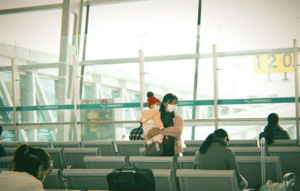
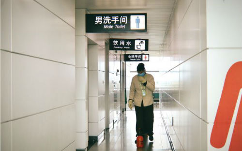
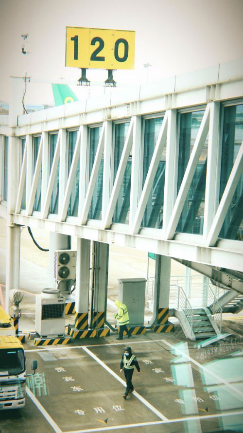
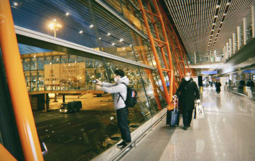

乡村厨师：“赚钱再重要，也不能拿生命开玩笑”
原文链接 备份链接 “ - 疫 情 之 下 - 父亲作为一家之主，把家里卖粮食的一万多块钱当做货款结给了供应商，按照他交代给我们的原话：“咱们已经吃亏了，就不要再让别人吃亏了，也让人家回家好好过个年。” ” …
经济观察网 记者 陈月芹 2月16日，在全国多数地区和企业进入复工的背景下，从南方的潮汕机场到北方的首都机场，依然人迹寥寥。往年一天7-8个直飞航，2020年受新型冠状病毒肺炎疫情影响，返京潮一再延后，航班多次被取消，每天直飞航班仅剩1-2趟。
在两地机场进出口，服务人员都佩戴口罩，少数乘客穿着一次性雨衣、护目镜等防护工具。所有返京旅客需在北京通、“京心相助”上填写健康情况、抵京后住址等信息。

疫情下的潮汕机场人迹寥寥 陈月芹/摄

疫情下的潮汕机场人迹寥寥 陈月芹/摄

疫情下的潮汕机场｜一位小孩因不适应儿童口罩苦哭闹不已 陈月芹/摄

疫情下的潮汕机场｜肯德基仅一人就餐，多数乘客打包带走 陈月芹/摄

疫情下的潮汕机场｜机场清洁人员在讨论假口罩新闻 陈月芹/摄

疫情下的潮汕机场｜工作人员均带上了口罩 陈月芹/摄

疫情下的潮汕机场，航班数量骤降 陈月芹/摄

首都机场要求所有进京人员填写健康情况和住址信息 陈月芹/摄

首都机场接机人群分隔着站立，避免聚集 陈月芹/摄

首都机场大屏幕滚动播放抗击疫情的红色标语 陈月芹/摄

首都机场｜许多乘客下机后驻足拍摄晚霞 陈月芹/摄

登记口处测一次体温，走过廊桥上机前测第二次体温 陈月芹/摄

潮汕机场提醒前往北京的旅客提前填写健康情况和住址信息 陈月芹/摄
版权声明：以上内容为《经济观察报》社原创作品，版权归《经济观察报》社所有。未经《经济观察报》社授权，严禁转载或镜像，否则将依法追究相关行为主体的法律责任。版权合作请致电：【010-60910566-1260】。
原文链接 备份链接 “ - 疫 情 之 下 - 父亲作为一家之主，把家里卖粮食的一万多块钱当做货款结给了供应商，按照他交代给我们的原话：“咱们已经吃亏了，就不要再让别人吃亏了，也让人家回家好好过个年。” ” …
原文链接 备份链接 来源：雪球App，作者： 腾讯棱镜深网，（https://xueqiu.com/6718098612/141480733） @今日话题 作者 | 孙宏超 相欣 编辑 | 康晓 出品｜深网·腾讯小满工作室 编者按：通过中 …
原文链接 备份链接 文/雷成林 编辑/大风 突然爆发的疫情几乎让所有的线下门店停摆。在实体业溃败之后，电商护住了城市的血脉，快递员、外卖小哥、线上买菜维持着城市的运转。 在农村，疫情导致各地封村封路，所有的线下交易暂停，农户的果蔬被滞留在 …
原文链接 备份链接 在这样的大灾面前能感受到整个国家都发动起来了，航空公司、海关都给了很多便利。希望能有更多的慈善组织参与其中，每一个体都是渺小的，集合起来才能发挥更大的能量。 口述 | 晓 苏(化名) 整理 | 巴 伊 2月13日清 …
原文链接 备份链接 文 | 龚菁琦 编辑 | 槐杨 1 《人物》：这个春节，你是怎么度过的？ 周富裕 ：农历二十七，我回了重庆老家，准备看看两位老人。农历二十九，也就是1月23日，知道封城的消息。本想在家里陪陪两位老人，但是很遗憾。封城当 …